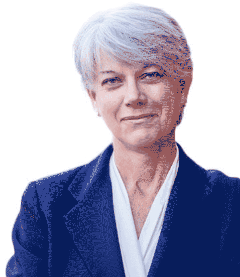

-
Court Upholds Nutrition Assistance During COVID-19 Pandemic
- A federal court struck down a harmful Trump administration rule that would have eliminated Supplemental Nutrition Assistance Program benefits for 700,000 low-income people.
-
By Andre Gobbo
Issues: Economic Justice
-
The People Have Spoken
-
We, the people, have spoken. It is clear that Joe Biden, even with final votes still being counted, has won a majority of the popular vote and over 270 electoral votes, securing his election as our 46th president.
-
Issues: Voting & Elections
- 
-
FCNL Opposes Administration Policy Change on Israeli Settlements
- As a Quaker organization seeking a just and lasting peace in the Middle East, the Friends Committee on National Legislation (FCNL) strongly opposes the Trump administration’s recent decision to allow the expenditure of U.S. taxpayer funds in Israeli settlements in the occupied West Bank.
-
Issues: Middle East & Iran
Give today:
Support FCNL's work for peace, social justice, a sustainable environment, and good government.
Learn to Virtually Lobby in 30 Minutes | Register Now >
The Latest
FCNL in the News | BBC World News | November 4, 2020
Missing and murdered: America's forgotten native girlsBackground | November 4, 2020
Elections 2020Event
Advocacy Team SummitWho is FCNL?
-

Advocates
Constituents around the country work with FCNL to build relationships with their members of Congress and change policies.
-

Lobbyists
Our professional lobbyists are known for their integrity and principled analysis.
-

Quakers
Friends are at the core of our work, in the way we approach policy change, and in the positions we advocate.